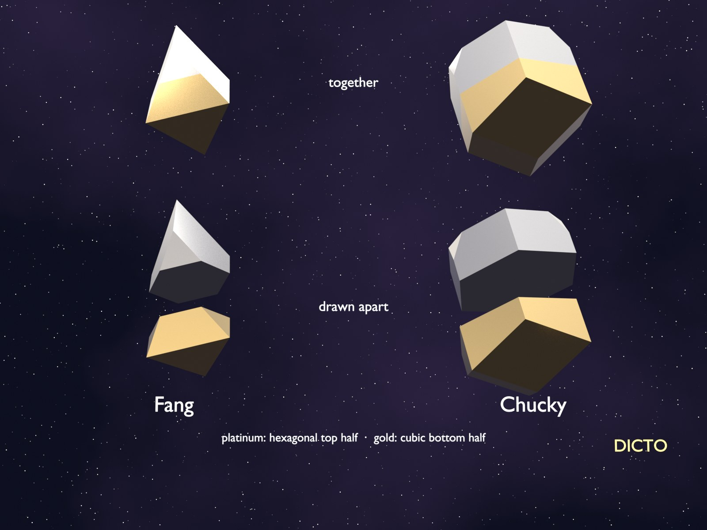

How cutting gaps in the right place, and watching which pieces touch, led to one rule for every way of stacking balls
Plato built his elements from solids, Democritus from indivisible atoms, and some of today's physics pictures space itself as made of small polyhedral grains. The old question behind them is how far space can be shared out into pieces of a few fixed kinds. For stacked balls there is now an exact answer:
However layers of equal balls are stacked, the space between and around them is shared out into pieces of only finitely many kinds, and every one of them is borrowed, whole or in half, from just two pure orders, the cubic and the hexagonal. Endless variety of order, from a finite set of quanta.
This is geometry, proved exactly in paper #57; the link to atoms and to physics is one of lineage and analogy, not a claim about nature.
DICTO came to the division of space through his hands, cutting and rebuilding PET-bottle caps into DICTOspheres. He narrowed the range to three spheres, each building its own crystal: the dodecahedron builds icosahedra and tetrahedra, the cuboctahedron builds cubes and rhombic dodecahedra, and the rhombic dodecahedron builds truncated octahedra and the octet. In Deltaverse he let deltahedra find their own lattice, where Rhombiverse had laid the lattice down first; in Polyhedraverse he cut rhombic dodecahedra in half and joined the halves into new solids, among them a slightly irregular truncated octahedron that still filled space, a forerunner of the golden split, and turned those cuts into the RHOMBIS puzzle. The apps became his playground, a place to pick up and turn solids freely; there he filled the gaps of dodecahedral and icosahedral structures with bidiminished and tridiminished icosahedra. He even planned spheres made in two halves, to bridge five-fold and four-fold symmetry. Cutting into halves and filling what is left run through every paper in this series; the rule of halves is where they meet.
Some shapes fill space on their own, like bricks or cubes. Most do not. DICTO's first question was whether any mix of the five Platonic solids (the tetrahedron, cube, octahedron, dodecahedron and icosahedron) can be made to fill space. Paper #47 showed that every mix can, all 31 of them, as long as a small set of seven connector pieces is allowed to plug the gaps.
The icosahedron, the twenty-sided die, is the most stubborn. Put icosahedra in a square grid and two kinds of gap are left over: a squashed icosahedron in the middle, which DICTO called the Unborn, and thin wedges between them, the AXE. The AXE sticks out wherever it is glued. In paper #48, the Golden Split, we cut each AXE into four small pyramids from one inside point and handed each pyramid to the neighbour it touches. At exactly one point, the golden point, nothing sticks out any more: the icosahedra and the Unborns both become neat, convex solids that fill space together. DICTO named them the Icosaxes and the Unborn Axes.
Precisely (#48): in the simple cubic lattice of icosahedra, cutting every AXE from the point 1/φ of the way along its axis turns the icosahedra and the Unborns into two convex truncated octahedra that fill space, and this is the only cut point at which both are convex. In the Lotus Jewel network the same cut gives a keyed pair, the Lotus Jewel Axes and the Dodecaxes, of volumes √5 and 2.
Paper #51, the Delian Bond, did the same with the oldest mixed filling of all: the octet, where tetrahedra and octahedra fill space together. Slide one flat cut through every place where a tetrahedron meets an octahedron, and give each side to its own piece. As the cut slides, one kind grows and the other shrinks, but the two always fill space. At one end the pieces are Kepler's rhombic dodecahedra, at the other end cubes. Halfway, at one exact place, the two pieces weigh the same: the small one has doubled and the large one halved. Doubling is the ancient Delian problem, doubling a cube, and DICTO named this equal pair Samson and Delilah.
Precisely (#51): one flat cut slid through every tetrahedron–octahedron pair of the octet gives a family of pairs of convex space-fillers from Kepler's rhombic dodecahedron through the octet to the cube; at one cut the two have exactly equal volume, twice the octet's tetrahedron and half its octahedron, and two other cuts make every edge equal.
Next we stopped looking only at the pieces and looked at who touches whom. Draw a line, a bond, between the centres of every two pieces that share a face. The lines make a web. Paper #52 showed that both of DICTO's families above are really one fixed crowd of points of two kinds, with one number slid between the kinds, like turning a dial. Each piece is simply the region that belongs to its point. As the dial turns, the pieces change shape, but the web changes in only two ways. The bond between a piece of one kind and a piece of the other never breaks. The bonds between pieces of the same kind hand over (one pair of pieces stops touching as another pair starts): in the golden family slowly and smoothly, in the Delian family all at once, at the octet.
The dial has a physical meaning: it is the size of a ball. The golden family is the arrangement of atoms in caesium chloride, the Delian family that of fluorite, and the range where the balls can touch ends exactly at the limits Linus Pauling gave for these crystals.
Precisely (#52): both DICTONIC loops are weighted Voronoi (power) diagrams of one fixed set of points of two kinds with one weight slid between the kinds; the bonds are the edges of the dual weighted-Delaunay web; the unlike bond never breaks inside a loop, while the two like bonds hand over, gradually in the golden loop and all at once, at the octet, in the Delian loop.
DICTO guessed that these two ways of handing over would turn up elsewhere. Paper #53 turned the same dial on ten more crystal arrangements and recorded every change exactly. The guess holds: the all-at-once hand-over appears in the square grid with its centres, in the honeycomb and in rock salt; the smooth hand-over appears in zinc blende, in the gaps of the hexagonal stacking, and in two famous metal alloy structures, A15 and C15.
Precisely (#53): for ten classical two-kind crystal site sets and one three-kind set, the power diagram is computed exactly along the whole weight line: every flip, the bonds on every interval, and every point where only unlike bonds exist; both hand-overs recur.
At special points of the dial, striking pairs of shapes appear. In the A15 alloy, at one exact setting, space is filled by a twenty-faced solid around one kind of atom and a small four-faced one around the other. DICTO named them Goliath and David. Paper #55 proved the setting exactly and found that Goliath is the outer skin of a famous puzzle shape, Jessen's orthogonal icosahedron. The tiling itself was known to crystal scientists; that the dial lands exactly on it, and that its icosahedron is Jessen's, we did not find in the sources searched.
Precisely (#55): in A15 (Cr₃Si), the power diagram with weight difference 3/4 between the Si and Cr sites is exactly a face-to-face tiling by Goliath, the convex hull of Jessen's orthogonal icosahedron, and David, a tetragonal disphenoid, two Goliaths and six Davids per cubic cell.
Oranges can be stacked in two pure ways. In the cubic way each layer sits in the hollows the layer below leaves, always moving on (ABCABC…). In the hexagonal way every other layer returns to the same place (ABAB…), so each layer is a mirror of its neighbours. The octet belongs to the cubic way; the hexagonal way gives the twinned octet: the same gaps, joined across mirror planes. Paper #56 turned the dial there. It has its own equal-weight pair, new solids that DICTO named Sonsam and Lahdeli, the twins of Samson and Delilah. Further on come a solid DICTO named Ian Dury and a slanted brick (a 60° rhombohedron), and at the end a single shape fills everything, the Blockhead. Adding keys to the pieces changes their shapes but never the web of bonds. The same idea of keys also explains the Sunstar of paper #42, where regular dodecahedra and Dogstars fill space: the dodecahedron is a cube with six roofs added, and the Dogstar is the same cube with its neighbours' roofs taken away.
Precisely (#56): on the twinned octet the weight walk passes exactly through the octet, then one point where all pieces have equal volume √2/6 (Sonsam, 19 corners with one nine-sided face on the mirror plane, and Lahdeli, 12 corners), then a stop of Ian Durys and 60° rhombohedra (13√2/54 and √2/54), and ends in Blockheads alone (√2/4); on the cubic octet the walk goes from the octet straight to cubes, with Samson and Delilah equal at λ = 3/8 − ∛4/4.
Real crystals rarely stack in only one pure way. They mix: ABAC, ABCACB, and endless others. An early signpost was paper #40, where two short rules placed DICTO's Ogdoecontahedron and its family into the stack of tetrahedra and octahedra, layered in any order, even in a pattern that never repeats.
Paper #57 turned the dial on every stacking at once and found a rule simple enough to say in two sentences. A four-faced (tetrahedral) gap always takes the piece it would have in the pure stacking of the layer it sits closest to. An eight-faced (octahedral) gap sits halfway between two layers, so its piece is two halves: the top half borrowed from the layer above, the bottom half from the layer below. That is all. So every stacking, however long or strange, is built from the pieces of the two pure stackings, and there are only finitely many kinds of piece. Where a cubic layer meets a hexagonal one, pieces appear that are half of one and half of the other, which DICTO named the Janus pieces (after the Roman god who looks both ways), Chucky and Fang.

Precisely (#57, the main theorem of the series): in every close-packed stacking, along the whole weight walk, each tetrahedral hole's piece is the piece of the cubic or the hexagonal stacking named by its nearest layer, and each octahedral hole's piece is a top half and a bottom half, each the half of the cubic or the hexagonal piece named by the layer on that side; so the pieces of all stackings are finite in kind and an octahedral piece's volume is always the mean of its two parents' volumes.
All by DICTO; DICTO DOIs open the newest version.
#40 The DICTO OG Family on Every Stacking. DICTO DOI: 10.5281/zenodo.23490114
#42 The DICTO Sunstar. DICTO DOI: 10.5281/zenodo.23497702
#47 Every Mix of the Platonic Solids Fills Space. DICTO DOI: 10.5281/zenodo.23551326
#48 The Golden Split: Icosahedra, Unborns and AXE Become Two Convex Space-Fillers. DICTO DOI: 10.5281/zenodo.23596362
#51 The Delian Bond: Samson, Delilah and the Octet Between Kepler's Rhombic Dodecahedron and the Cube. DICTO DOI: 10.5281/zenodo.23606828
#52 The Web of Bonds: How the DICTONIC Bonds Hand Over. DICTO DOI: 10.5281/zenodo.23629252
#53 The Global Web of Bonds: How Bonds Hand Over Across Crystal Networks. DICTO DOI: 10.5281/zenodo.23631140
#55 David and Goliath: Jessen's Icosahedron and the Tetrahedron in the A15 Weight Walk. DICTO DOI: 10.5281/zenodo.23632358
#56 Sonsam and Lahdeli: the Delian Bond on the Twinned Octet, with Ian Dury, Blockhead and Keyed Switch Points. DICTO DOI: 10.5281/zenodo.23635823
#57 The Rule of Halves: the Holes of Every Close-Packed Stacking. DICTO DOI: 10.5281/zenodo.23647898